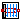

This package contains base classes that are used to construct the models in Buildings.HeatTransfer.Convection.
Extends from Modelica.Icons.BasesPackage (Icon for packages containing base classes).| Name | Description |
|---|---|
|  PartialConvection | Partial model for heat convection |

| Type | Name | Default | Description |
|---|---|---|---|
| Area | A | Heat transfer area [m2] | |
| CoefficientOfHeatTransfer | hFixed | 3 | Constant convection coefficient [W/(m2.K)] |
| Angle | til | Surface tilt [rad] |
| Type | Name | Description |
|---|---|---|
| HeatPort_a | solid | |
| HeatPort_b | fluid |
partial model PartialConvection "Partial model for heat convection"
extends Buildings.BaseClasses.BaseIcon;
parameter Modelica.SIunits.Area A "Heat transfer area";
parameter Modelica.SIunits.CoefficientOfHeatTransfer hFixed=3
"Constant convection coefficient";
Modelica.SIunits.HeatFlowRate Q_flow "Heat flow rate from solid -> fluid";
Modelica.SIunits.HeatFlux q_flow "Convective heat flux from solid -> fluid";
Modelica.SIunits.TemperatureDifference dT(start=0) "= solid.T - fluid.T";
Modelica.Thermal.HeatTransfer.Interfaces.HeatPort_a solid;
Modelica.Thermal.HeatTransfer.Interfaces.HeatPort_b fluid;
parameter Modelica.SIunits.Angle til(displayUnit="deg") "Surface tilt";
protected
final parameter Real cosTil=Modelica.Math.cos(til) "Cosine of window tilt";
final parameter Real sinTil=Modelica.Math.sin(til) "Sine of window tilt";
final parameter Boolean isCeiling = abs(sinTil) < 10E-10 and cosTil > 0
"Flag, true if the surface is a ceiling";
final parameter Boolean isFloor = abs(sinTil) < 10E-10 and cosTil < 0
"Flag, true if the surface is a floor";
equation
dT = solid.T - fluid.T;
solid.Q_flow = Q_flow;
fluid.Q_flow = -Q_flow;
Q_flow = A*q_flow;
end PartialConvection;